NES - Os jogos da SEGA
 :::. Por B-Mark - Nos
anos 80 iniciou-se a rivalidade entre a Nintendo e a Sega, com seus
consoles de 8 bits que são respectivamente o NES e o Master
System. Outro ramo em que a Sega atuava era o dos arcades onde
surigiram vários clássicos da empresa como Shinobi, After
Burner e Space Harrier.
:::. Por B-Mark - Nos
anos 80 iniciou-se a rivalidade entre a Nintendo e a Sega, com seus
consoles de 8 bits que são respectivamente o NES e o Master
System. Outro ramo em que a Sega atuava era o dos arcades onde
surigiram vários clássicos da empresa como Shinobi, After
Burner e Space Harrier.
Hoje em dia é normal ver um
jogo da Sega para um sistema da Nintendo, pois após a empresa
sair do mercado de consoles devido a problemas com o Dreamcast ,
ela se tornou uma softhouse que produz jogos para os consoles de
várias empresas, entre elas a sua ex-concorrente
Nintendo. Mas nos anos 80, com o sucesso de vários jogos de
srcades da Sega, várias softhouses que produziam jogos para o
NES conseguiram a licença da Sega para fazerem conversões
de seus jogos para o NES, e surpreendentemente a Sega autorizou as
conversões de seus jogos para um sistemasconcorrente, porque
assim ela estaria ganhando dinheiro com isto. Lembrando que na
época a Nintendo impôs uma cláusula contratual que
impedia as softhouses de fazerem jogos para sistemas concorrentes como
o Master System.
Porém, vários destes jogos eram inferiores nos gráficos e até na jogabilidade se comparados aos jogos originais dos arcades e até as versões do Master System, que tinha maior capacidade gráfica que o NES. Curiosamente, nenhuma empresa lançou uma adaptação de Alex Kidd in Miracle World, Phantasy Star ou qualquer outro jogo da Sega que surgiu no Master System, só pegaram os jogos que saíram para arcades.
Para
ser sincero, não gostei do Shinobi e do Altered Beast para NES, mas
reconheço que os After Burner 1 e 2 ficaram bons e na minha opinião são
os melhores jogos da Sega convertidos para o NES.
Comparação NES vs Master System
Confiram aqui as imagens da
versão de alguns jogos do NES quando comparada com a
versão do Master System, fotos à esquerda são dos
jogos no NES, as da diretita do Master System:
After Burner
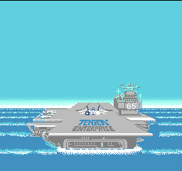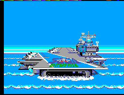
Fantasy Zone II
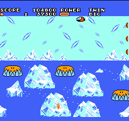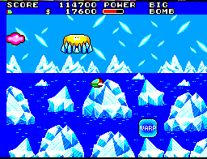
Shinobi
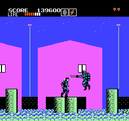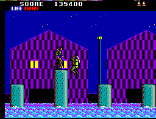
Space Harrier
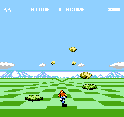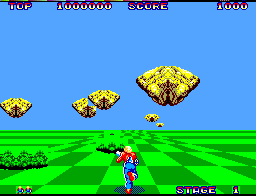
Os jogos
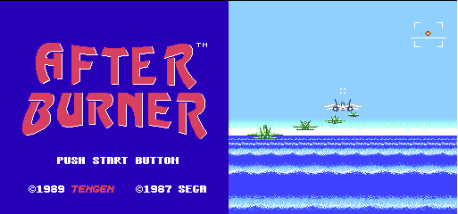
Fabricante: Tengen
Ano: 1989
Conversão
do jogo para arcades onde você controla um caça supersônico. Foi
lançado somente nos EUA pela Tengen, uma subdivisão da Atari criada para
produzir jogos para consoles da Sega e Nintendo. Este jogo não tem a
licença da Nintendo.
After Burner II
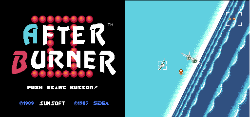
Fabricante: Sunsoft
Ano: 1989
2ª versão do After
Burner que saiu originalmente para arcades. Ganhou uma versão
para o Mega Drive e esta para o NES.
After Burner II saiu somente no Japão.
Alien Syndrome
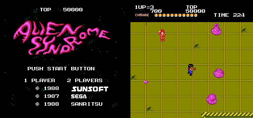
Fabricante: Sunsoft
Distribuidora nos EUA: Tengen
Ano: 1988
Jogo
em que você escolhe entre os personagens Rick e Mary que estão dentro
de uma nave alienígena, e precisam salvar seus amigos que foram
capturados por aliens. Jogo mediano lançado no ocidente pela Tengen.
Fantasy Zone ( Japão - Sunsoft )
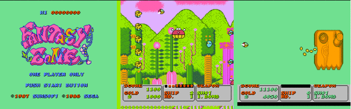
Fabricante: Sunsoft
Ano: 1987
Fantasy
Zone é um shotter da Sega que saiu para arcades em que você enfrenta
várias criaturas estranhas denominadas menons, que invadiram a Fantasy
Zone. O protagonista Opa-Opa marcou presença no anime
Zillion, que foi produzido para divulgar o Master System no Japão. É um jogo mediano com gráficos inferiores às
versões para outros sistemas e que nunca foi lançado no
ocidente.
Fantasy Zone ( EUA - Tengen )
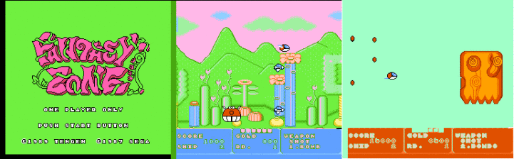
Fabricante: Tengen
Ano: 1989
Dois
anos depois da Sunsoft lançar sua versão de Fantasy Zone para NES no
Japão, a Tengen resolveu fazer a sua própria versão para o mercado
americano. Sua jogabilidade é mediana, mas seus gráficos ficaram bem
inferiores à versão da Sunsoft que foi lançada
somente no Japão.
Fantasy Zone II: The teardrop of Opa - Opa
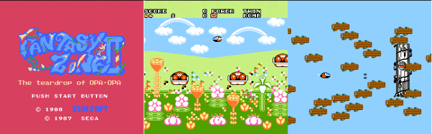
Fabricante: Sunsoft
Ano: 1988
Continuação de Fantasy Zone, na qual Opa-Opa terá que enfrentar uma nova horda de menons. Gráficos e jogabilidade medianas. Fantasy Zone II só foi lançado no Japão.
Juuoki ( Altered Beast )
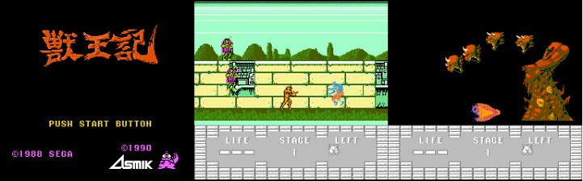
Fabricante: Asmik
Ano: 1990
Conhecido
como Altered Beast no Ocidente, este jogo conta a história de um
centurião romano morto em batalha e que foi ressucitado por Zeus, para
salvar sua filha Athena das mãos de Neff, deus do Mundo Subterrâneo. Este
jogo, apesar de ser bem inferior a outras versões, possui fases e
criaturas exclusivas em que o personagem pode se transformar.
Shinobi
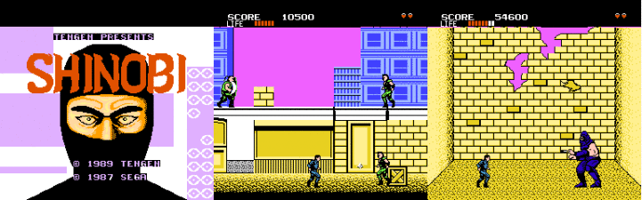
Fabricante: Tengen
Ano: 1989
Esta versão de Shinobi para o NES foi baseada na versão do Master System e não na do arcade. Isso
se deve ao fato do personagem ter medidor de life, que apareceu na
versão do Master, já que no arcade o personagem morre na primeira
pancada que leva.
Space Harrier
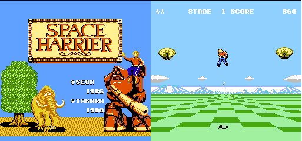
Fabricante: Takara
Ano: 1988
Space
Harrier é um jogo bem conhecido nos arcades e nos sistemas da Sega, mas
esta versão do NES certamente é desconhecida por muitos pelo fato de
ter saído somente no Japão. O jogo possui gráficos e sons fracos, mas tem uma jogabilidade razoável.
Acesse o Trombone e comente sobre essa matéria!


Vindo direto de uma tipica feirinha do Rolo, eis que me aparece esse NES todo quimbado, sujo, cacarento e com cheiro de cachorro novo. Não pensei duas vezes, peguei o coitado e me preparei para uma bela limpeza tirando fotos de todo o processo para mostrar algumas dicas sobre como restaurar um dos nossos queridos e amados Nintendinhos. Acompanhe!
Ninja Gaiden para Mega Drive
Um dos erros mais imperdoáveis da Sega. Em 90/91 mais ou menos, a Sega ganhou da Tecmo a oportunidade de fazer umas versões do Ninja Gaiden para os seus consoles. Essa chance é comparável ao que Deus fez quando deu o mundo para Adão... bem, o final tanto de Adão quanto da Sega nesse caso são semelhantes.
Albert Odyssey é um dos jogos mais amados pelos fãs do Saturn. Com uma história simples mas rica, dramatica e emocionante, encantou muita gente que naquele inicio da era 32 bits, ainda não estava acostumada com trilha sonora feita com instrumentos de verdade e gráficos cheios de luz e efeitos. Mas, não era para ser assim com esse jogo...